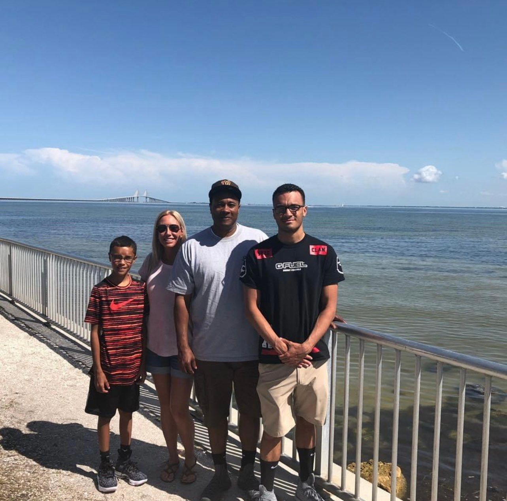

Social
Home
About
Goals
Photos
Family and friends are one of the best parts of life. Without them, life would be difficult because there would be no one there to guide you through certain situations. You would have no one with experience in your life. My mom and dad are Nate and Kim Washington. My brother is Nate Washington Jr. One of my favorite things to do is spend time with friends. We have sleepovers and go out to eat and things like that. My social life is very important to me and I don't know what I would do without family and friends.
